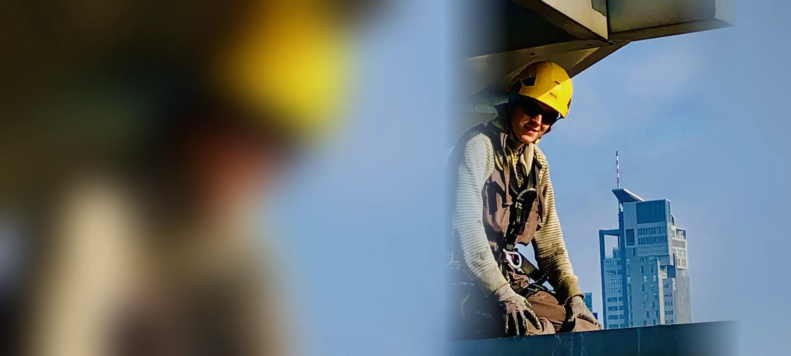
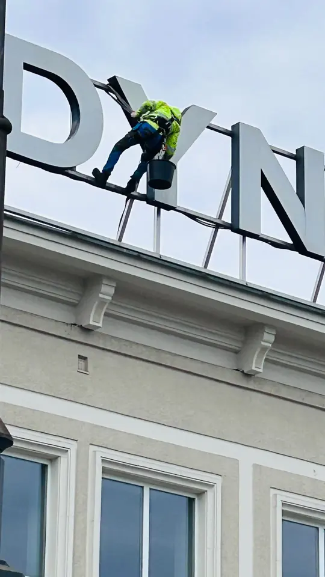
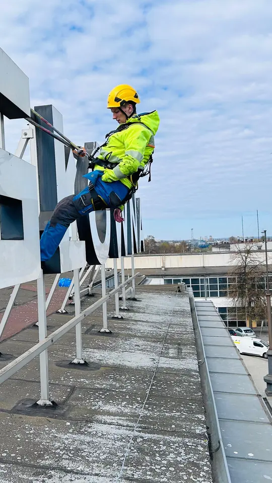

Biurowce i centrum
Budynki biurowe i usługowe przy Świętojańskiej, 10 Lutego i w okolicy Skweru Kościuszki.
- mycie fasad szklanych i okien
- montaż i serwis napisów
- reklamy i szyldy na wysokości
- konserwacja elewacji

Firma alpinistyczna z Gdyni. Pracujemy na linach przy biurowcach w Śródmieściu, willach w Orłowie i Redłowie, osiedlach na Chyloni i Karwinach oraz przy obiektach portowych. Szybko, bez rusztowań i bez blokowania ulicy.
Gdynia to wysokie budynki, skarpy, port i wiatr od morza. W tych warunkach dostęp linowy jest szybszy i tańszy niż rusztowanie czy podnośnik.
Najczęstsze prace, które wykonujemy na linach dla gdyńskich firm, wspólnot i właścicieli.
Budynki biurowe i usługowe przy Świętojańskiej, 10 Lutego i w okolicy Skweru Kościuszki.
Obiekty portowe, hale i konstrukcje stalowe w rejonie portu i Obłuża.
Bloki i osiedla na Chyloni, Karwinach, Obłużu i w Dąbrowie.
Orłowo, Redłowo i Kamienna Góra: strome dachy i wysokie elewacje na skarpach.
Z bazy w Śródmieściu dojeżdżamy do każdej dzielnicy Gdyni w kilkanaście minut.
Biurowce, kamienice i lokale w centrum: fasady, napisy, reklamy i konserwacja elewacji.
Śródmieście · Kamienna Góra · Działki Leśne · Grabówek
Wille, domy i apartamentowce na skarpach nad morzem, osiedla przy Wielkim Kacku.
Orłowo · Redłowo · Mały Kack · Wielki Kack · Karwiny
Osiedla wspólnot i spółdzielni oraz obiekty portowe i przemysłowe.
Chylonia · Cisowa · Obłuże · Oksywie · Pogórze · Dąbrowa
Cała oferta: prace wysokościowe Gdynia, Sopot, Gdańsk. Dojeżdżamy też do Rumi i Redy.



Jesteśmy rodzinną firmą z Gdyni. Pracowaliśmy przy napisach na dachach, w porcie i na budynkach w centrum miasta. Przy każdym zleceniu jesteśmy osobiście, a po pracy zostawiamy protokół ze zdjęciami.
Nasza baza jest przy ul. 10 Lutego 10 w Śródmieściu Gdyni. Dzięki temu do obiektów w Gdyni dojeżdżamy najszybciej, a prace możemy zwykle rozpocząć w ciągu 24–48 godzin od akceptacji wyceny.
To prace wykonywane na linach techniką dostępu linowego IRATA. Opłacają się wszędzie tam, gdzie rusztowanie byłoby drogie lub zablokowałoby ulicę, a podnośnik nie wjedzie albo nie sięgnie: na wysokich elewacjach, stromych dachach i nad wejściami.
Tak. Wykonywaliśmy m.in. prace monterskie przy montażu systemu oddymiającego w bazie masowej w Porcie Gdynia. Pracujemy też przy konstrukcjach stalowych, halach i zabezpieczeniach antykorozyjnych.
Tak. Myjemy fasady szklane, okna i świetliki biurowców oraz budynków usługowych, także cyklicznie w ramach umowy serwisowej. Najemcy pracują normalnie, a wejścia zostają otwarte.
Tak. Poza wspólnotami i firmami wykonujemy prace dla właścicieli domów i willi: naprawy dachów i kominów, czyszczenie rynien, mycie elewacji i przeszkleń na wysokości.
Wyślij zdjęcia i adres obiektu przez formularz, WhatsApp lub e-mail. Każdą wycenę przygotowujemy indywidualnie i bezpłatnie, zwykle tego samego dnia roboczego.
Poradniki dla zarządców: jak wybrać firmę alpinistyczną, alpinista, podnośnik czy rusztowanie, glony i zacieki na elewacji. Więcej na blogu.
Wyślij zdjęcia i adres obiektu. Przygotujemy bezpłatną wycenę, zwykle tego samego dnia roboczego.